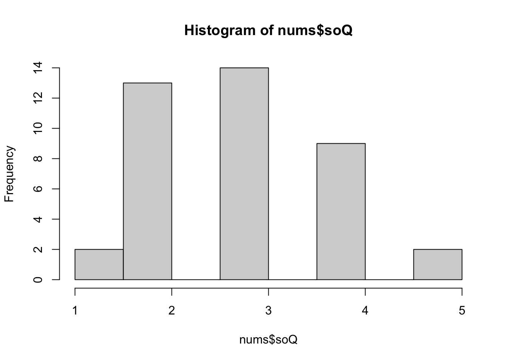

library(tidyverse, quietly = TRUE, warn.conflicts = FALSE)
library(utils)
library(zip)
library(questionr)3 Analyse
Tout programme \(R\) qui se respecte commence par le chargement des librarys
Pour analyser des données, il faut des… données.
La FDJ met à disposition des joueurs1 les résultats de TOUS ses jeux.
1 et de tout le monde, d’ailleurs
Les résultats des tirages EuroDreams sont disponibles sous forme d’un fichier zippé. En cliquant sur le lien ci-dessus, on télécharge un fichier zippé dans le répertoire courant de l’ordinateur hôte.
Comme je suis paresseux, je demande a \(R\) de le faire…
3.1 Récupérer l’historique des tirages
3.2 Récupérer l’historique des tirages
On commence par affecter l’adresse du fichier à une variable, puis on invoque dowload.file() pour récupérer le zip et unzip() pour dézipper.
# URL du fichiers de données des tirages sur le site FDJ
url <- "https://www.sto.api.fdj.fr/anonymous/service-draw-info/v3/documentations/1a2b3c4d-9876-4562-b3fc-2c963f66afa5"
download.file(url, "donnees.zip", mode = "wb")
unzip("donnees.zip", exdir = "donnees", overwrite = TRUE)Une fois dézippé, c’est un fichier .csv2 qui contient \(32\) colonnes, dont la grande majorité sont inutiles pour les statistiques (nombre de gagnants, montants des gains et autres joyeusetés inutiles).
3.2.1 Faire le ménage
Il n’y a que \(4\) colonnes inintéressantes, voire nécessaires ;
- jour du tirage LUNDI ou JEUDI
- date du tirage au format français : jour/mois/année
- numéros tirés une chaîne de \(6\) caractères séparés par un tiret “-”
- le numéro dream tiré en chaîné de caractères
Donc, on va supprimer ce qui est inutile en indiquant uniquement ce qu’on garde (c’est plus simple).
# noms des colonnes à garder
noms <- c("jour_de_tirage", "date_de_tirage",
"boules_gagnantes_en_ordre_croissant",
"numero_dream")
# Met le fichier dans un tibble
donnees <-
readr::read_csv2("donnees/eurodreams_202311.csv") |>
select(all_of(noms))ℹ Using "','" as decimal and "'.'" as grouping mark. Use `read_delim()` for more control.New names:
Rows: 242 Columns: 35
── Column specification
──────────────────────────────────────────────────────── Delimiter: ";" chr
(5): jour_de_tirage, date_de_tirage, date_de_forclusion, boules_gagnant... dbl
(29): annee_numero_de_tirage, numéro_de_tirage_dans_le_cycle, boule_1, b... lgl
(1): ...35
ℹ Use `spec()` to retrieve the full column specification for this data. ℹ
Specify the column types or set `show_col_types = FALSE` to quiet this message.
• `` -> `...35`Petite vérification :
head(donnees)# A tibble: 6 × 4
jour_de_tirage date_de_tirage boules_gagnantes_en_ordre_croissant numero_dream
<chr> <chr> <chr> <dbl>
1 JEUDI 26/02/2026 -17-18-19-21-23-36- 4
2 LUNDI 23/02/2026 -1-7-12-25-26-39- 1
3 JEUDI 19/02/2026 -8-10-13-36-37-38- 4
4 LUNDI 16/02/2026 -6-10-13-24-26-38- 3
5 JEUDI 12/02/2026 -17-27-30-33-34-36- 3
6 LUNDI 09/02/2026 -9-11-19-22-33-36- 3À noter que les tirages sont classés en ordre descendant, les plus récents d’abord. Un peu de nettoyage s’impose. Abréger les noms.
# le vecteur `noms` contient les noms par paires
# "nouveau nom" = "ancien nom"
noms <- c(jt = "jour_de_tirage",
dt = "date_de_tirage",
bg = "boules_gagnantes_en_ordre_croissant",
nd = "numero_dream")
donnees <- rename(donnees, all_of(noms))
# remplace LUNDI par L et JEUDI par J
donnees$jt <- recode(donnees$jt, "LUNDI" = "L", "JEUDI" = "J")
head(donnees)# A tibble: 6 × 4
jt dt bg nd
<chr> <chr> <chr> <dbl>
1 J 26/02/2026 -17-18-19-21-23-36- 4
2 L 23/02/2026 -1-7-12-25-26-39- 1
3 J 19/02/2026 -8-10-13-36-37-38- 4
4 L 16/02/2026 -6-10-13-24-26-38- 3
5 J 12/02/2026 -17-27-30-33-34-36- 3
6 L 09/02/2026 -9-11-19-22-33-36- 3# extrait tous les tirages de la
# colonne `donnees$bg`
b <- str_extract_all(donnees$bg, "\\d+")
# mettre b à plat
b1 <- unlist(b)
# transforme en nombre
b1 <- as.integer(b1)
# transforme la `list()` en `matrix()`
b2 <- matrix(data = b1, ncol = 6, byrow = TRUE)
head(b2) [,1] [,2] [,3] [,4] [,5] [,6]
[1,] 17 18 19 21 23 36
[2,] 1 7 12 25 26 39
[3,] 8 10 13 36 37 38
[4,] 6 10 13 24 26 38
[5,] 17 27 30 33 34 36
[6,] 9 11 19 22 33 36Affecter chaque colonnes de la matrice à une colonne du tibble()
donnees <- donnees |>
mutate(n1 = b2[,1], .after = bg) |>
mutate(n2 = b2[,2], .after = n1) |>
mutate(n3 = b2[,3], .after = n2) |>
mutate(n4 = b2[,4], .after = n3) |>
mutate(n5 = b2[,5], .after = n4) |>
mutate(n6 = b2[,6], .after = n5) |>
mutate(bg = NULL) On va tranformer jt en facteur3
donnees$jt <- donnees$jt |>
factor(levels = c("L", "J"))
# transforme les dates en dates compréhensibles
# par R
donnees$dt <- dmy(donnees$dt)Maintenant que \(R\) sait que la colonne dt contient des dates aux normes françaises dmy, on peut ranger les tirages en ordre descendant puisqu’il est ascendant d’origine.
donnees <- arrange(donnees, dt)
head(donnees)# A tibble: 6 × 9
jt dt n1 n2 n3 n4 n5 n6 nd
<fct> <date> <int> <int> <int> <int> <int> <int> <dbl>
1 L 2023-11-06 10 13 14 25 30 35 5
2 J 2023-11-09 14 16 19 31 32 37 2
3 L 2023-11-13 1 6 25 26 33 39 2
4 J 2023-11-16 5 11 13 18 25 27 5
5 L 2023-11-20 6 13 18 25 26 32 3
6 J 2023-11-23 4 15 22 23 28 35 4Petite récapitulation :
summary(donnees) jt dt n1 n2 n3
L:121 Min. :2023-11-06 Min. : 1.000 Min. : 2.00 Min. : 3.0
J:121 1st Qu.:2024-06-03 1st Qu.: 2.000 1st Qu.: 7.00 1st Qu.:13.0
Median :2024-12-31 Median : 4.000 Median :11.00 Median :18.0
Mean :2024-12-31 Mean : 5.888 Mean :11.91 Mean :17.7
3rd Qu.:2025-07-30 3rd Qu.: 8.000 3rd Qu.:16.00 3rd Qu.:22.0
Max. :2026-02-26 Max. :18.000 Max. :31.00 Max. :33.0
n4 n5 n6 nd
Min. : 6.00 Min. :10.00 Min. :16.00 Min. :1.000
1st Qu.:20.00 1st Qu.:25.00 1st Qu.:32.00 1st Qu.:2.000
Median :23.00 Median :30.00 Median :36.50 Median :3.000
Mean :23.33 Mean :29.28 Mean :34.88 Mean :2.901
3rd Qu.:28.00 3rd Qu.:33.75 3rd Qu.:39.00 3rd Qu.:4.000
Max. :37.00 Max. :39.00 Max. :40.00 Max. :5.000 # Nettoyage
rm(b, b1, b2, noms)3.3 Fonctions
3.3.1 Récupérer les données
Les 3 fonctions ci-dessous permettent de récupérer des éléments dans le jeu de données donnees.
recup_n1_n6 <- # récupère les 6 numéros
function(x) # du tirage numéro x
donnees |>
slice(x) |>
select(n1:n6) |>
as_vector()recup_nd <- # récupère le numéro
function(x) # dream du tirage numéro x
donnees |>
slice(x) |>
select(nd) |>
as_vector()recup_jt <- # récupère le jour du
function(x) # du tirage numéro x
donnees |>
slice(x) |>
select(jt) |>
as_vector()Pour gérer les statistiques, on va utiliser des tibble() :
nums <- tibble(
# Première colonne pour la liste des numéros
nu = c(1:40),
# Pour les sorties de tous les numéros
so = rep.int(0, 40),
# Pour les sorties de tous les numéros LUNDI
so_L = rep.int(0, 40),
# Pour les sorties de tous les numéros JEUDI
so_J = rep.int(0, 40),
# Pour les écarts de tous les numéros
ec = rep.int(0, 40),
# Pour les écarts de tous les numéros LUNDI
ec_L = rep.int(0, 40),
# Pour les écarts de tous les numéros JEUDI
ec_J = rep.int(0, 40)
)et pareil pour les numéros dream :
dreams <- tibble(
# Première colonne pour la liste des nums dream
nu = c(1:5),
# Pour les sorties de tous les nums dream
so = rep.int(0, 5),
# Pour les sorties des nums dream LUNDI
so_L = rep.int(0, 5),
# Pour les sorties des nums dream JEUDI
so_J = rep.int(0, 5),
# Pour les écarts de tous les nums dream
ec = rep.int(0, 5),
# Pour les écarts des nums dream LUNDI
ec_L = rep.int(0, 5),
# Pour les écarts des nums dream JEUDI
ec_J = rep.int(0, 5)
)Petite vérification :
head(nums)# A tibble: 6 × 7
nu so so_L so_J ec ec_L ec_J
<int> <dbl> <dbl> <dbl> <dbl> <dbl> <dbl>
1 1 0 0 0 0 0 0
2 2 0 0 0 0 0 0
3 3 0 0 0 0 0 0
4 4 0 0 0 0 0 0
5 5 0 0 0 0 0 0
6 6 0 0 0 0 0 0head(dreams)# A tibble: 5 × 7
nu so so_L so_J ec ec_L ec_J
<int> <dbl> <dbl> <dbl> <dbl> <dbl> <dbl>
1 1 0 0 0 0 0 0
2 2 0 0 0 0 0 0
3 3 0 0 0 0 0 0
4 4 0 0 0 0 0 0
5 5 0 0 0 0 0 03.4 Premiers calculs
On va prendre le tiers pour les données initiales.
Remplir les colonnes des nums et dream. Et commencer à créer des données. Récupérer le nombre de tirages et en retenir \(\frac{1}{3}\).
# nombre de lignes pour commencer
nbre_lignes <- round(nrow(donnees) / 3)
nbre_lignes[1] 81Puis, itérer sur les 81 premières lignes de donnees.
for (i in 1:nbre_lignes) {
j <- recup_jt(i) #
n <- recup_n1_n6(i)
d <- recup_nd(i)
# incrémenter toutes les sorties
nums$so[n] <- nums$so[n] + 1
dreams$so[d] <- dreams$so[d] + 1
# mettre tous les écarts à jour
nums$ec <- nums$ec + 1
nums$ec[n] <- 0
dreams$ec <- dreams$ec + 1
dreams$ec[d] <- 0
# données du Lundi
if(j == "L"){
# incrémenter les sorties
nums$so_L[n] <- nums$so_L[n] + 1
dreams$so_L[d] <- dreams$so_L[d] + 1
# màj écarts
nums$ec_L <- nums$ec_L + 1
nums$ec_L[n] <- 0
dreams$ec_L <- dreams$ec_L + 1
dreams$ec_L[d] <- 0
}
# données du Jeudi
else if(j == "J"){
# incrémenter les sorties
nums$so_J[n] <- nums$so_J[n] + 1
dreams$so_J[d] <- dreams$so_J[d] + 1
# màj écarts
nums$ec_J <- nums$ec_J + 1
nums$ec_J[n] <- 0
dreams$ec_J <- dreams$ec_J + 1
dreams$ec_J[d] <- 0
}
# Erreur : le jour ne correspond ni à L ni à J
# improbable mais toujours être prudent
else{
print("Erreur de jour (J ou L) ligne ", i,
"de la base de donnée")
}
}Pour les écarts, c’est « presque » pareil. Tous les écarts sont à \(0\) au départ4.
4 L’écart d’un numéro est toujours l’écart par rapport au tirage précédent lors duquel ce numéro est sorti et il n’y avait pas de tirage avant le premier.
On commence par augmenter tous les écarts de \(1\), puis on met à \(0\) les écarts des numéros du tirage examiné.
nums# A tibble: 40 × 7
nu so so_L so_J ec ec_L ec_J
<int> <dbl> <dbl> <dbl> <dbl> <dbl> <dbl>
1 1 10 5 5 3 2 1
2 2 16 9 7 1 11 0
3 3 18 10 8 2 1 2
4 4 8 3 5 11 6 5
5 5 10 4 6 4 2 4
6 6 9 6 3 3 16 1
7 7 10 5 5 15 9 7
8 8 15 5 10 1 6 0
9 9 10 4 6 1 2 0
10 10 12 6 6 0 0 10
# ℹ 30 more rowssummary(nums) nu so so_L so_J ec
Min. : 1.00 Min. : 3.00 Min. : 2.00 Min. : 1 Min. : 0.000
1st Qu.:10.75 1st Qu.:10.00 1st Qu.: 4.75 1st Qu.: 4 1st Qu.: 1.000
Median :20.50 Median :12.00 Median : 6.00 Median : 6 Median : 3.000
Mean :20.50 Mean :12.15 Mean : 6.15 Mean : 6 Mean : 6.275
3rd Qu.:30.25 3rd Qu.:15.00 3rd Qu.: 7.25 3rd Qu.: 8 3rd Qu.: 9.250
Max. :40.00 Max. :22.00 Max. :12.00 Max. :11 Max. :35.000
ec_L ec_J
Min. : 0.00 Min. : 0.00
1st Qu.: 1.75 1st Qu.: 1.00
Median : 4.50 Median : 3.00
Mean : 5.75 Mean : 5.85
3rd Qu.: 9.00 3rd Qu.: 9.00
Max. :23.00 Max. :35.00 3.4.1 Compter les boules
nums# A tibble: 40 × 7
nu so so_L so_J ec ec_L ec_J
<int> <dbl> <dbl> <dbl> <dbl> <dbl> <dbl>
1 1 10 5 5 3 2 1
2 2 16 9 7 1 11 0
3 3 18 10 8 2 1 2
4 4 8 3 5 11 6 5
5 5 10 4 6 4 2 4
6 6 9 6 3 3 16 1
7 7 10 5 5 15 9 7
8 8 15 5 10 1 6 0
9 9 10 4 6 1 2 0
10 10 12 6 6 0 0 10
# ℹ 30 more rowsEt pareil pour les numéros dreams
dreams# A tibble: 5 × 7
nu so so_L so_J ec ec_L ec_J
<int> <dbl> <dbl> <dbl> <dbl> <dbl> <dbl>
1 1 22 8 14 7 13 3
2 2 12 5 7 0 0 0
3 3 15 11 4 4 2 5
4 4 16 10 6 5 3 2
5 5 16 7 9 2 1 1Commençons par dreams()
dreams# A tibble: 5 × 7
nu so so_L so_J ec ec_L ec_J
<int> <dbl> <dbl> <dbl> <dbl> <dbl> <dbl>
1 1 22 8 14 7 13 3
2 2 12 5 7 0 0 0
3 3 15 11 4 4 2 5
4 4 16 10 6 5 3 2
5 5 16 7 9 2 1 13.5 Catégoriser
nums# A tibble: 40 × 7
nu so so_L so_J ec ec_L ec_J
<int> <dbl> <dbl> <dbl> <dbl> <dbl> <dbl>
1 1 10 5 5 3 2 1
2 2 16 9 7 1 11 0
3 3 18 10 8 2 1 2
4 4 8 3 5 11 6 5
5 5 10 4 6 4 2 4
6 6 9 6 3 3 16 1
7 7 10 5 5 15 9 7
8 8 15 5 10 1 6 0
9 9 10 4 6 1 2 0
10 10 12 6 6 0 0 10
# ℹ 30 more rowsEssai de rank
sort(rank(nums$so)) [1] 1.0 2.0 3.0 4.5 4.5 6.5 6.5 11.5 11.5 11.5 11.5 11.5 11.5 11.5 11.5
[16] 17.0 17.0 17.0 21.0 21.0 21.0 21.0 21.0 26.0 26.0 26.0 26.0 26.0 29.0 31.5
[31] 31.5 31.5 31.5 34.5 34.5 36.5 36.5 38.0 39.0 40.0table(nums$so)
3 5 7 8 9 10 11 12 13 14 15 16 17 18 19 22
1 1 1 2 2 8 3 5 5 1 4 2 2 1 1 1 Essai de quant.cut()
table(dreams$so)
12 15 16 22
1 1 2 1 table(quant.cut(dreams$so,
nbclass = 3,
labels = c("a", "b", "c")
))
a b c
2 0 3 table(quant.cut(nums$so,
nbclass = 20,
labels = FALSE))
1 2 3 4 5 6 8 9 10 11 12 13 14
2 1 2 2 8 3 5 5 1 4 2 3 2 nums# A tibble: 40 × 7
nu so so_L so_J ec ec_L ec_J
<int> <dbl> <dbl> <dbl> <dbl> <dbl> <dbl>
1 1 10 5 5 3 2 1
2 2 16 9 7 1 11 0
3 3 18 10 8 2 1 2
4 4 8 3 5 11 6 5
5 5 10 4 6 4 2 4
6 6 9 6 3 3 16 1
7 7 10 5 5 15 9 7
8 8 15 5 10 1 6 0
9 9 10 4 6 1 2 0
10 10 12 6 6 0 0 10
# ℹ 30 more rowsdonnees <- donnees |> mutate(n1 = b2[,1], .after = bg) |> mutate(n2 = b2[,2], .after = n1) |>
nums <- nums |>
mutate(soQ = quant.cut(nums$so,
nbclass = 15,
labels = FALSE),
.after = so)
nums# A tibble: 40 × 8
nu so soQ so_L so_J ec ec_L ec_J
<int> <dbl> <int> <dbl> <dbl> <dbl> <dbl> <dbl>
1 1 10 4 5 5 3 2 1
2 2 16 10 9 7 1 11 0
3 3 18 11 10 8 2 1 2
4 4 8 2 3 5 11 6 5
5 5 10 4 4 6 4 2 4
6 6 9 3 6 3 3 16 1
7 7 10 4 5 5 15 9 7
8 8 15 9 5 10 1 6 0
9 9 10 4 4 6 1 2 0
10 10 12 6 6 6 0 0 10
# ℹ 30 more rowsnums <- nums |>
mutate(soQ = cut(nums$so,
breaks = 5,
labels = FALSE),
.after = so)
nums# A tibble: 40 × 8
nu so soQ so_L so_J ec ec_L ec_J
<int> <dbl> <int> <dbl> <dbl> <dbl> <dbl> <dbl>
1 1 10 2 5 5 3 2 1
2 2 16 4 9 7 1 11 0
3 3 18 4 10 8 2 1 2
4 4 8 2 3 5 11 6 5
5 5 10 2 4 6 4 2 4
6 6 9 2 6 3 3 16 1
7 7 10 2 5 5 15 9 7
8 8 15 4 5 10 1 6 0
9 9 10 2 4 6 1 2 0
10 10 12 3 6 6 0 0 10
# ℹ 30 more rowstable(nums$soQ)
1 2 3 4 5
2 13 14 9 2 hist(nums$soQ)
nums$soQ <- LETTERS[nums$soQ]
nums$soQ <- paste0(nums$soQ, ":ST")
nums# A tibble: 40 × 8
nu so soQ so_L so_J ec ec_L ec_J
<int> <dbl> <chr> <dbl> <dbl> <dbl> <dbl> <dbl>
1 1 10 B:ST 5 5 3 2 1
2 2 16 D:ST 9 7 1 11 0
3 3 18 D:ST 10 8 2 1 2
4 4 8 B:ST 3 5 11 6 5
5 5 10 B:ST 4 6 4 2 4
6 6 9 B:ST 6 3 3 16 1
7 7 10 B:ST 5 5 15 9 7
8 8 15 D:ST 5 10 1 6 0
9 9 10 B:ST 4 6 1 2 0
10 10 12 C:ST 6 6 0 0 10
# ℹ 30 more rowstable(nums$soQ)
A:ST B:ST C:ST D:ST E:ST
2 13 14 9 2 nums |>
dplyr::count(so) |>
mutate(prop = proportions(n) * 100) |> arrange(prop)# A tibble: 16 × 3
so n prop
<dbl> <int> <dbl>
1 3 1 2.5
2 5 1 2.5
3 7 1 2.5
4 14 1 2.5
5 18 1 2.5
6 19 1 2.5
7 22 1 2.5
8 8 2 5
9 9 2 5
10 16 2 5
11 17 2 5
12 11 3 7.5
13 15 4 10
14 12 5 12.5
15 13 5 12.5
16 10 8 20 sum(nums$so) / 40[1] 12.15summary(nums) nu so soQ so_L
Min. : 1.00 Min. : 3.00 Length:40 Min. : 2.00
1st Qu.:10.75 1st Qu.:10.00 Class :character 1st Qu.: 4.75
Median :20.50 Median :12.00 Mode :character Median : 6.00
Mean :20.50 Mean :12.15 Mean : 6.15
3rd Qu.:30.25 3rd Qu.:15.00 3rd Qu.: 7.25
Max. :40.00 Max. :22.00 Max. :12.00
so_J ec ec_L ec_J
Min. : 1 Min. : 0.000 Min. : 0.00 Min. : 0.00
1st Qu.: 4 1st Qu.: 1.000 1st Qu.: 1.75 1st Qu.: 1.00
Median : 6 Median : 3.000 Median : 4.50 Median : 3.00
Mean : 6 Mean : 6.275 Mean : 5.75 Mean : 5.85
3rd Qu.: 8 3rd Qu.: 9.250 3rd Qu.: 9.00 3rd Qu.: 9.00
Max. :11 Max. :35.000 Max. :23.00 Max. :35.00